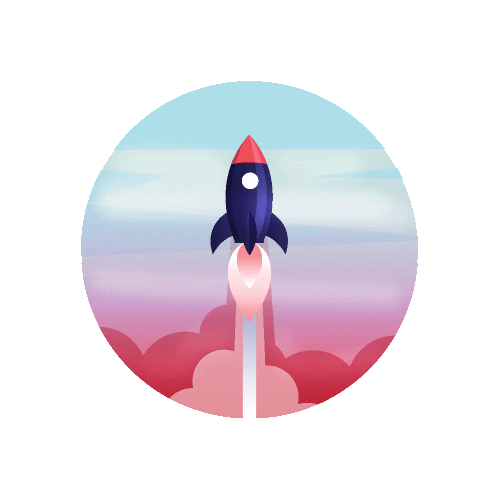

The how-to of this piece is not that hard. Click around to find the next page, play the minigames, and enjoy the piece. *Disclaimer* This piece is not finished and I will continue to add to this piece so check back every so often.
Expect that some links will not work and if need be to restart the page. It's important to explore each world to best understand my intepretation of the Seven Deadly Sins. To get back to the Hangar click here :
Rules, how-to's, faq's.
There maybe some formatting issues that cause an image to be offscreen or a page to look congested due to screen size differences. So be aware of that possibility. :) To get back to the solar system find and click this icon:
